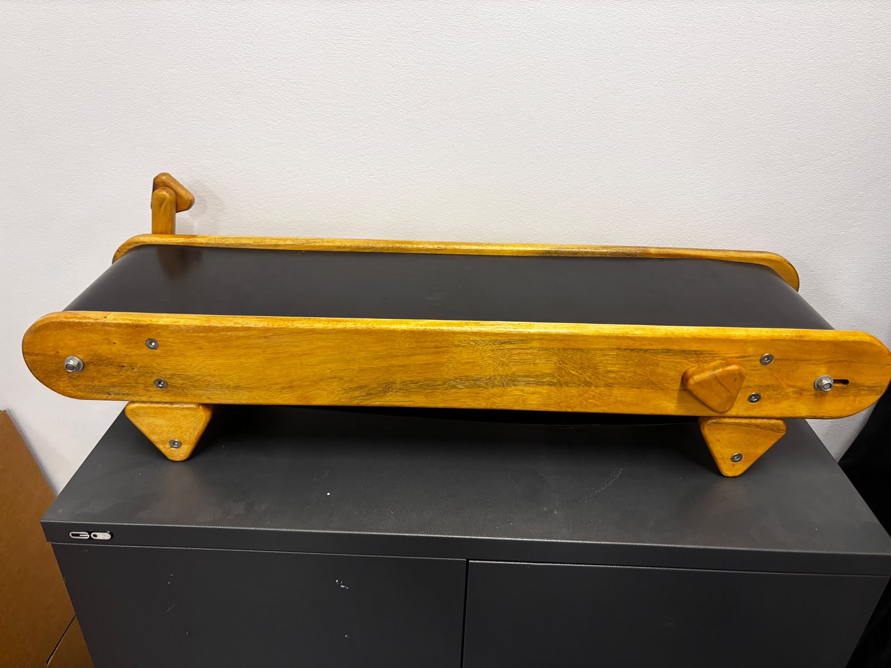
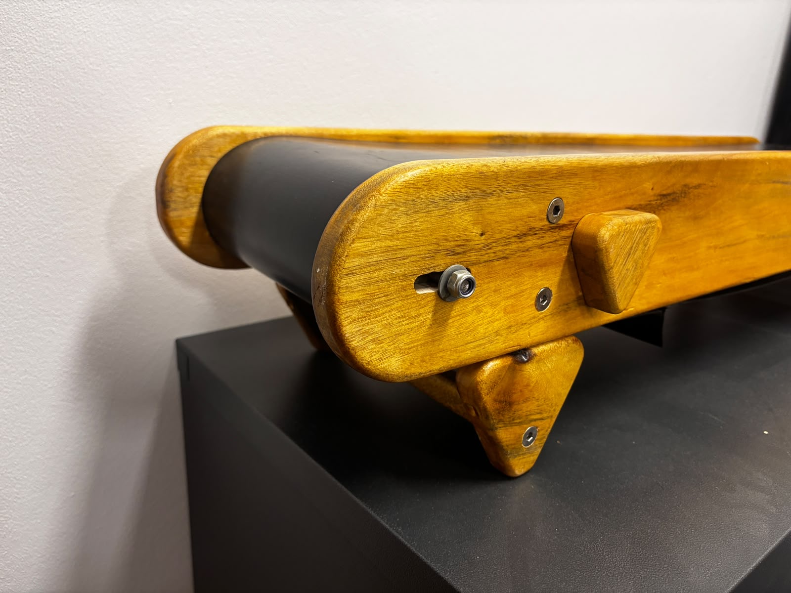
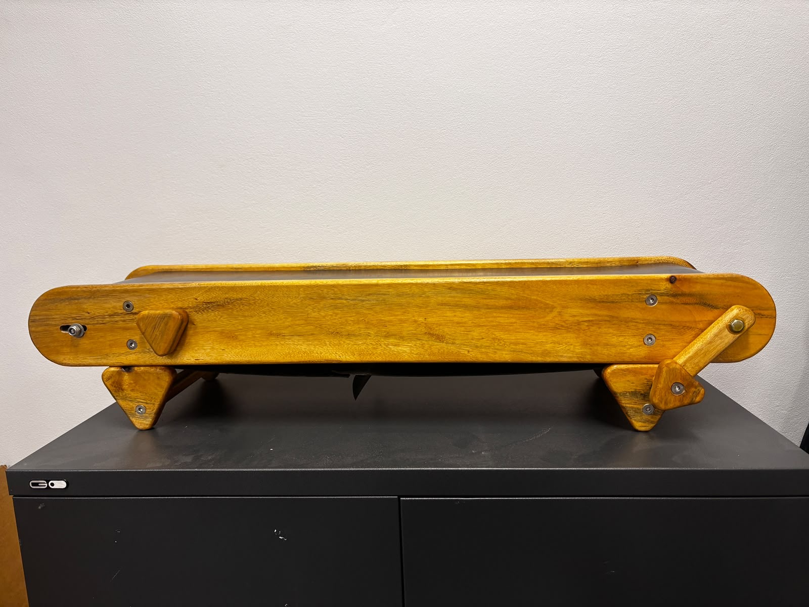
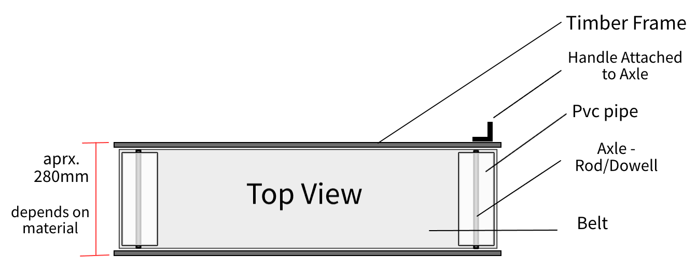

TIMBER / 02
Conveyor Design – Educational Tools
- WORK
- Hand-operated recycling education resource
- YEAR
- 2023
- MEDIUM
- Salvaged camphor laurel, melamine, PVC, rubber belt & metal fittings
- CONTEXT
- Solo commission · Jenna O’Connell, Port Macquarie–Hastings Council

Overview
I designed and built a small, hand-cranked conveyor for Port Macquarie–Hastings Council’s school recycling workshops. As materials move along the belt, children can practise sorting reusable and recyclable items, while anything left on the conveyor drops into a container at the end.
The commission combined a practical classroom demonstration with a second aim: make the resource itself an example of material reuse, thoughtful construction and repairable design.
Design Brief
Jenna O’Connell, a council school education officer, needed a portable version of a recycling sorting line that children could interact with. It had to operate manually rather than with a motor, sit flat on a table or floor, fit in a work vehicle and be manageable for one person to carry. The initial size discussed was approximately 100 cm by 30 cm, with a preferred weight under 10 kg.
Using recycled or upcycled materials wherever practical was a priority. At the same time, the mechanism needed to be engaging for students, safe to handle and straightforward to maintain during repeated education sessions.


Process
I built the conveyor in our family workshop, The Shed, which operates on renewable power. For the frame I salvaged camphor laurel from a neighbour’s burn pile. Camphor laurel is an invasive species in our area; I milled the recovered timber and machined it into mostly 22 mm planks, then sanded and rounded the edges before applying a clear varnish to create a smoother, more child-friendly finish.
A section of melamine recovered from a kitchen removal sits beneath the belt. Its smooth surface helps reduce friction while supporting the items being carried. The rollers use offcuts of PVC downpipe left over from a granny-flat build, capped with circular pieces of melamine to help them turn consistently without wobbling.
I experimented with belt options, including fabric and specialist recycled belting, before choosing a purchased belt for more dependable operation. Other purchased hardware included threaded rod and stainless steel batten screws; recycled metal flat was reused within the tensioning system, along with a mix of new and salvaged nuts and washers. I used triangular forms for the crank handle, tensioning knobs and legs as a subtle reference to the recycling symbol.
The belt can travel in either direction. A concealed adjustment system provides about 30 mm of movement for setting the belt tension, controlled by two triangular knobs that are best moved together. I designed the assembly to be taken apart with basic tools so that the belt—the most likely part to need replacement—can be changed rather than requiring a completely new resource.
I also tested adding a separate carrying handle, but removed it from the design because it obstructed access, interrupted the clean timber sides and added unnecessary components. The finished unit could be picked up directly instead.

Outcome
The completed conveyor met the educational purpose and gave me a satisfying result in both its function and timber finish. The client was especially appreciative of the effort to explain the reclaimed materials and their sustainability story, and the resource was still being used for education in late 2026.
I was conscious that this was a one-off mechanism, not a product tested over thousands of cycles. Making the tension adjustable and the belt replaceable was therefore central to the design. The project strengthened my ability to balance a client’s practical needs, sustainability goals, mechanical problem-solving and the realities of fabrication.